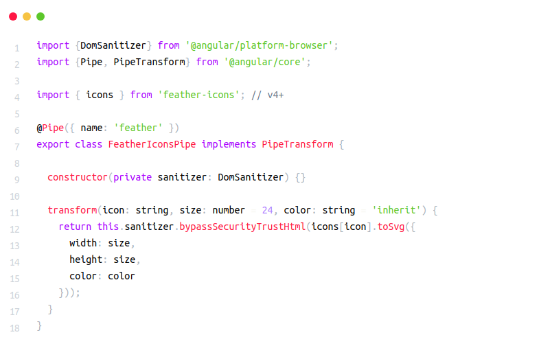

Prims.js
Download
Syntax Highlighter for Every Language
Prism is a lightweight, extensible syntax highlighter, built with modern web
standards in mind. It’s used in thousands of websites, including some of those you
visit daily.
Contribuir
